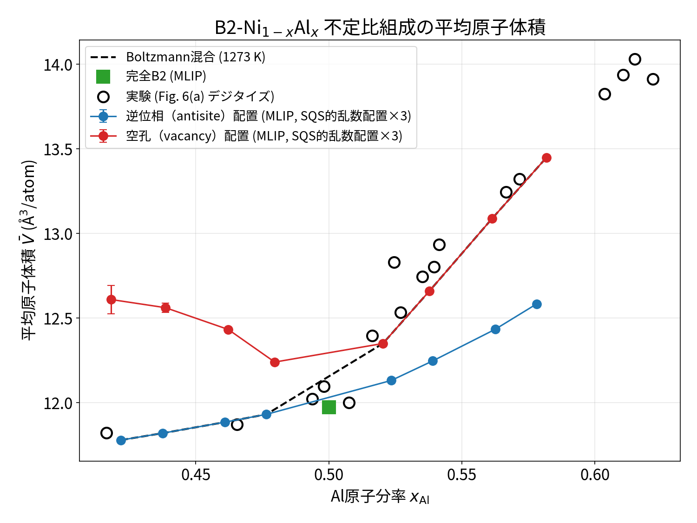
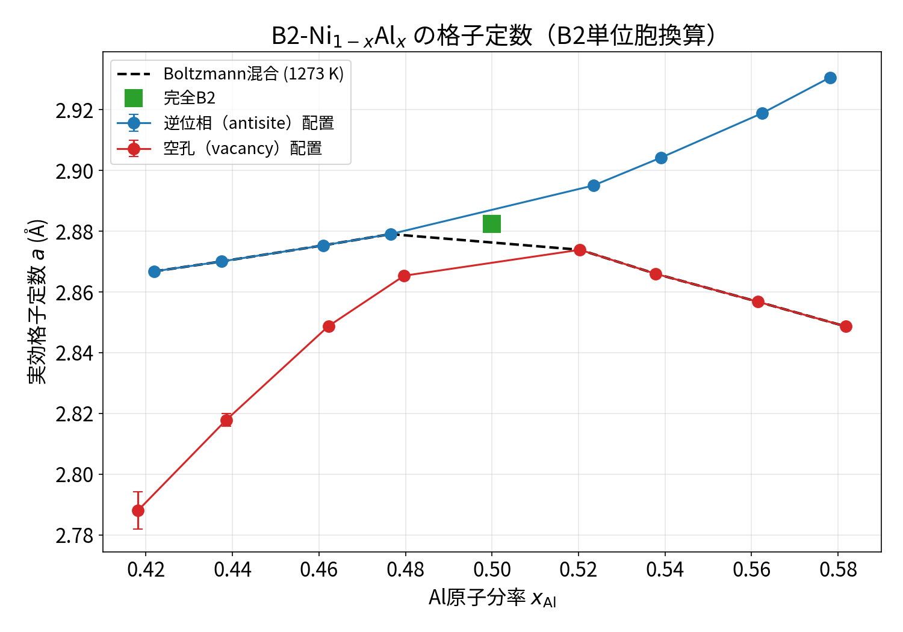
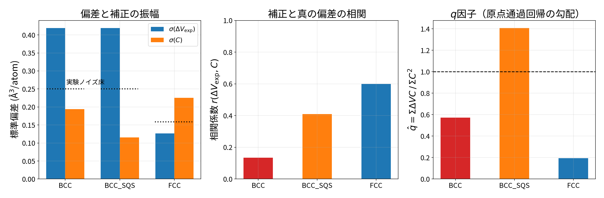
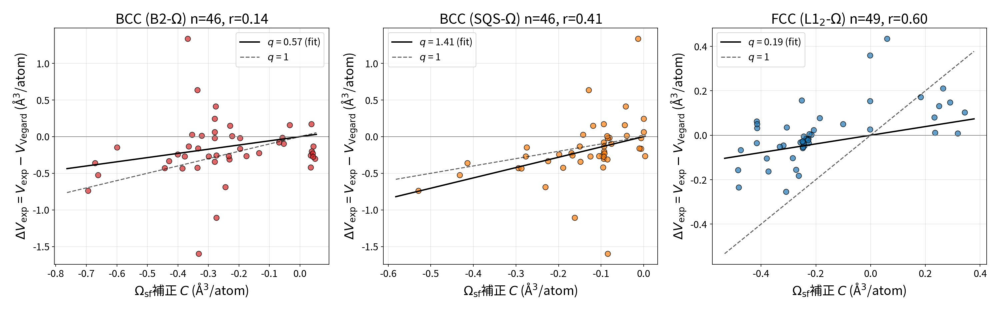

対象論文: T. Yamanouchi & S. Miura, Mater. Trans. 59, 546–555 (2018), DOI: 10.2320/matertrans.MJ201604
手法: MACE-MP-0、B2 4×4×4スーパーセル（128サイト）、xAl=0.42–0.58の8組成× 2欠陥様式（逆位相 / 空孔）×乱数配置3種＝49構造を全緩和。欠陥様式は生成エネルギーの Boltzmann重み（1273 K）で混合。実験値は論文Fig. 6(a)のB2枝開丸を自動デジタイズ。
| 指標 | 結果 |
|---|---|
| 欠陥化学の予言 | Ni過剰側=Ni逆位相、Al過剰側=Ni空孔（三重欠陥型）を正しく選択 |
| 完全B2: a / V̄ | 2.882 Å / 11.975 ų（実験 2.887 Å / ~12.0 ų） |
| 実験12点との一致（Boltzmann混合） | RMSE 0.157 ų/atom・MAPE 0.98% |
| 配置揺らぎ（乱数種間σ） | ≤0.08 ų/atom（実験との差より十分小） |
判定: MLIP＋確率論的配置サンプリングでFig. 6(a)のB2不定比枝は約1%（MAPE 0.98%）で再現可能。 Al過剰側のV̄急増は格子定数の増加ではなくNi空孔による原子数減少が支配し、 実験の急峻な立ち上がり（勾配）まで一致する。


詳細: laves_fig6/b2_offstoich/B2_OFFSTOICH_REPORT.md
| モデル（独立テスト31 HEA） | RMSE全体 | BCC(17) | FCC(14) |
|---|---|---|---|
| Vegard則（King体積） | 0.0202 | 0.0226 | 0.0170 |
| 実験Ωsf（King+Alonso, q=1） | 0.0564 | 0.0473 | 0.0658 |
| 実験Ωsf（q校正→q≈0） | 0.0198 | 0.0226 | 0.0157 |
| DFT-Ωsf（B2/L1₂, q校正） | 0.0155 | 0.0157 | 0.0152 |
| DFT-Ωsf（BCC-SQS参照, q=1） | 0.0138 | 0.0125 | — |
判定: 実験（希薄極限）Ωsfはそのままでは有害、q校正するとVegardに退化し寄与なし。 Ωsfの概念自体はDFTで構造別に再定義すれば有用（BCCで44.5%改善、校正不要のq=1）。
qはモデル V = VVegard + qC の原点通過回帰勾配 q̂ = ΣΔVC/ΣC² であり、 σ・平均・相関に厳密分解できる（q̂ = [rσ(ΔV)σ(C)+ΔV̄·C̄]/[σ(C)²+C̄²]、 切片あり勾配 r×σ(ΔV)/σ(C) とはC̄≠0のため一致しない点に注意。95 HEA解析）:
| BCC (B2-Ω) | BCC (SQS-Ω) | FCC (L1₂-Ω) | |
|---|---|---|---|
| 信号/ノイズ比 σ(ΔV)/ノイズ床 | 1.68 | 1.68 | 0.80 |
| 相関 r | 0.14 | 0.41 | 0.60 |
| 切片あり勾配 r×σ(ΔV)/σ(C) | 0.29 | 1.49 | 0.34 |
| q̂（原点通過回帰、主指標） | 0.57 | 1.41（1を跨ぐ） | 0.19 |


詳細: omega_q_analysis/REPORT.md・results_q_decomposition.json